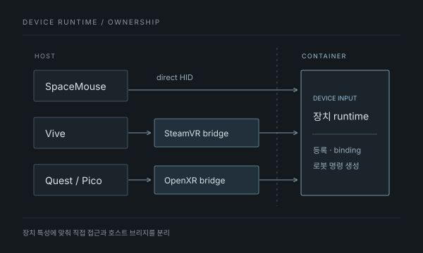

DOCKER TELEOPERATION · MIMICX
장치 입력에서
컨테이너와 실제 로봇까지
Docker 환경 텔레오퍼레이션 장치 연동
장치별 실행 조건을 구분하고, Host와 Container의 역할을 나눠 연결했습니다.
01 / GOAL & MY ROLE
장치마다 다른 조건을
하나의 플랫폼에 연결
호스트에서 사용하던 텔레오퍼레이션 장치가 Docker 기반 플랫폼에서도 동작하도록 연동했습니다. 기존 배포 시스템과 설치 도구를 사용하면서 SpaceMouse·Vive·Quest/Pico의 연결 경로와 진단을 보강했습니다.
기존 Vive 브리지를 연동·보강하고, Quest/Pico는 OpenXR 세션을 호스트가 담당하는 브리지를 제안해 구현과 실기 확인으로 이어갔습니다. 장치마다 접근 조건이 달라 직접 HID 접근과 VR 브리지를 구분했습니다.
Docker 배포 시스템과 설치 도구는 기존 구현을 사용했습니다.

02 / SYSTEM FLOW
VR 세션은 호스트에서,
플랫폼 입력은 컨테이너로
SpaceMouse는 호스트의 HID 장치 접근 조건을 준비하고 컨테이너에서 직접 발견·open/read하도록 했습니다. 별도의 SpaceMouse 브리지는 만들지 않았습니다.
Vive는 호스트의 SteamVR, Quest/Pico는 호스트의 OpenXR 세션을 이용합니다. VR 브리지가 읽은 입력 snapshot은 공유 메모리로 전달하고, 상태·제어에는 Unix socket을 사용합니다.
컨테이너의 backend는 입력을 장치 등록과 로봇 소속인 binding에 연결해 로봇 명령을 생성합니다. 호스트 사용자 세션에 묶인 runtime과 플랫폼의 입력 처리를 구분한 구조입니다.
VR 세션과 입력 수집
- SteamVR · OpenXR runtime
- OpenXR graphics · focus · render
- pose · 버튼 · 입력 활성 상태
공유 메모리 · 입력 snapshot
Unix socket · 상태 / 제어
입력 소비와 로봇 명령
- snapshot과 runtime 상태 확인
- 장치 등록 · 로봇 binding
- 플랫폼 입력 → 로봇 명령 생성
03 / PROBLEM & INVESTIGATION
장치가 보이는 것과
입력이 오는 것은 달랐습니다.
외부 장치 프로그램에서 장치가 보여도 플랫폼에는 목록이 없거나, 등록 후 disconnected 상태이거나, 입력값이 변하지 않는 문제가 있었습니다. ‘연결 안 됨’이라는 하나의 현상으로 묶지 않고 실패한 단계를 구분했습니다.
- 발견과 실제 읽기 분리
장치 후보가 목록에 있다는 사실과 runtime이 실제로 열리고 입력을 읽는 상태를 나눠 확인했습니다.
- OpenXR 실행 조건 추적
runtime 파일뿐 아니라 library·IPC 접근, desktop graphics, 세션 focus와 render 상태까지 영향을 주고 있었습니다.
- 실행 책임 비교
컨테이너의 경로를 계속 보정하는 방식과 호스트가 XR 세션을 담당하는 방식을 비교하고, 입력과 상태를 브리지로 전달하는 방향을 선택했습니다.
- 01
장치 발견
backend가 장치 후보를 찾는가?
- 02
등록 · binding
선택한 장치와 로봇 소속이 연결됐는가?
- 03
Runtime 연결
실제 세션과 sample에 접근할 수 있는가?
- 04
입력값 변화
장치를 움직일 때 값이 실제로 바뀌는가?
- 05
실제 로봇 동작
입력이 명령으로 이어져 로봇이 움직이는가?
04 / MODIFICATION
OpenXR 세션의 책임을
호스트로 분리
호스트 브리지가 실제 장치 입력을 수집하고 컨테이너가 이를 읽도록 연결했습니다. 서비스가 실행 중인지와 별개로 세션 준비·입력 활성·snapshot의 신선도를 확인할 수 있게 했습니다.
OpenXR를 직접 실행
library · IPC · graphics · focus
runtime 파일 노출만으로는 실행되지 않음
컨테이너 접근과 세션 조건이 결합
OpenXR 세션 · 실제 입력 수집
입력 소비 → 플랫폼 명령
runtime 상태와 입력 신선도를 구분해 확인
호스트 세션과 플랫폼 연결을 분리
Quest/Pico의 OpenXR 브리지 경로에 대한 비교입니다. SpaceMouse에 브리지를 추가하거나 기존 Docker 배포 시스템 전체를 새로 만든 것은 아닙니다.
05 / VALIDATION & RESULT
연결 표시에서 끝내지 않고,
값의 변화와 로봇 동작까지
장치가 목록에 보이거나 서비스가 실행되는 상태를 완료로 보지 않았습니다. 입력값이 바뀌는지 확인하고 실제 로봇 제어에 반영되는지 장치별로 구동해 확인했습니다.
같은 연결 실패 표시에도 원인은 달랐습니다. 장치별 runtime과 실행 환경을 나누고, 값이 어디까지 전달되는지 따라가며 원인을 좁혔습니다.
- DIRECT HIDSpaceMouse 두 대 구분
- 장치를 구분해 등록하고 실제 텔레오퍼레이션을 확인했습니다.
- STEAMVR BRIDGEVive 두 controller 연동
- 등록·binding·calibration과 실제 텔레오퍼레이션을 확인했습니다.
- OPENXR BRIDGEQuest · Pico 실제 입력과 동작
- 각 장치의 브리지 연결·입력 상태와 실제 텔레오퍼레이션을 확인했습니다.
- DIAGNOSTICS발견 · 연결 · 입력 변화를 구분
- 장치 발견과 등록, runtime 접근, sample 변화, 로봇 동작을 단계별로 확인했습니다.